右膝 人口関節手術20日目
右膝人口関節手術振り返り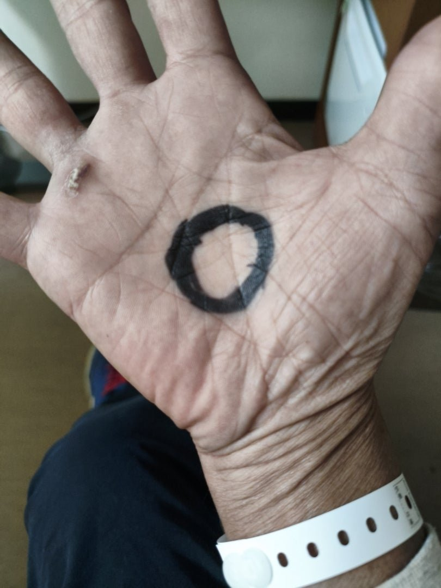
もう一度手術のを振り返る前日に主治医の先生から右手にマジックで丸を描かれたこれは右足の人口関節手術だという意味である間違って左足を手術してしまうのを防ぐため。
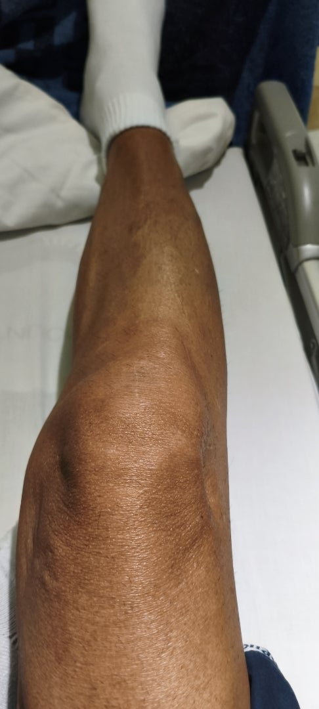
切る前の綺麗な右足。
スネ毛は普段から剃っているのでとても綺麗だ。そして細長い。更に色が黒い。
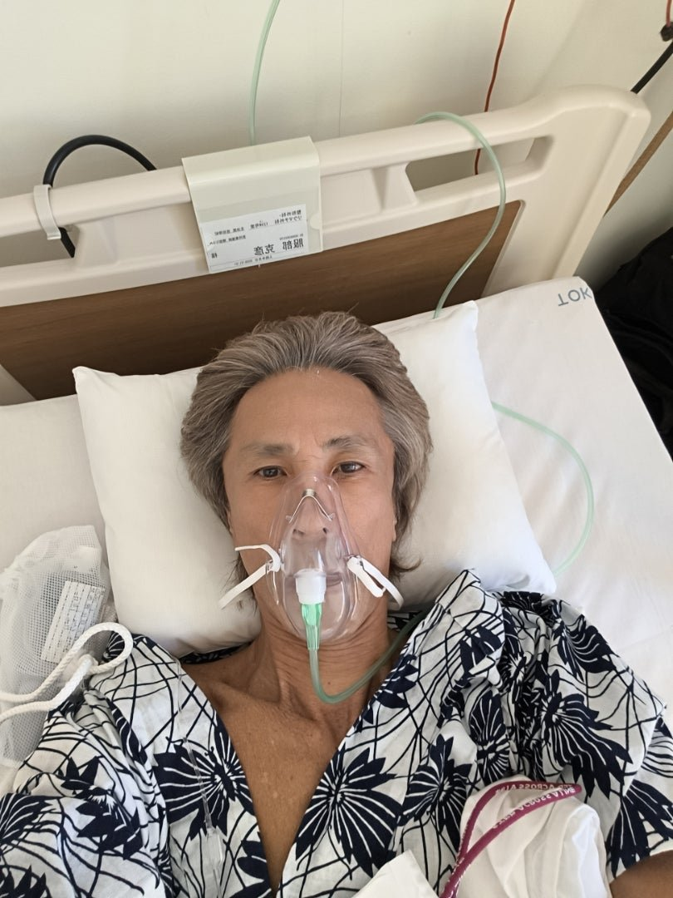
全身麻酔から目が覚めた俺意識が朦朧とした中で痛みを堪えて自撮りをした。、酸素吸入している。左手には点滴やコード類オシッコの管まで繋がれているようだ。痛いやら恥ずかしいやら……。
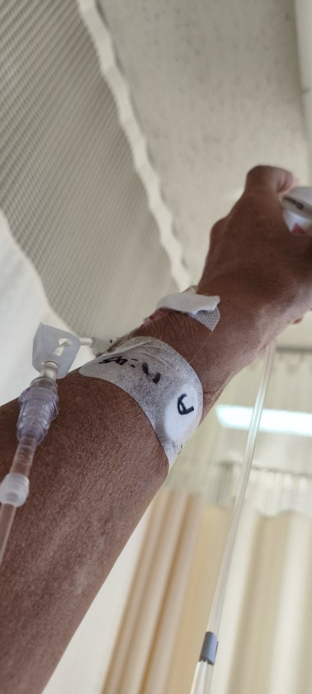
YouTube動画を撮りたいぐらいだ。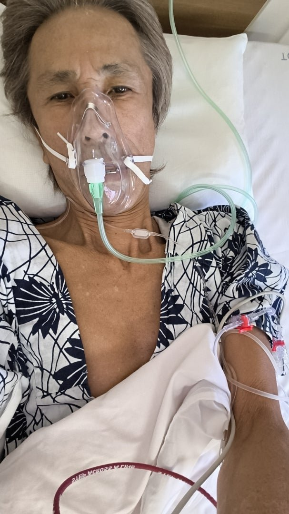
ヤバい顔になってるのが自分でも分かるがしかたない……。観念するしかなさそうである。動けないし痛い。足も何かに繋がれているようである。
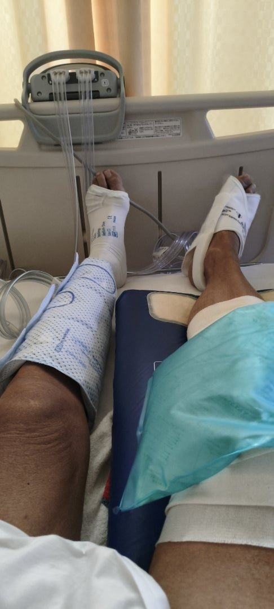
包帯グルグルポンプが足を締め付けるアイスノンが乗せられてとても重く感じる足はピクリとも動かせないし自分で見ることもできない写真を撮るのが精一杯だ。
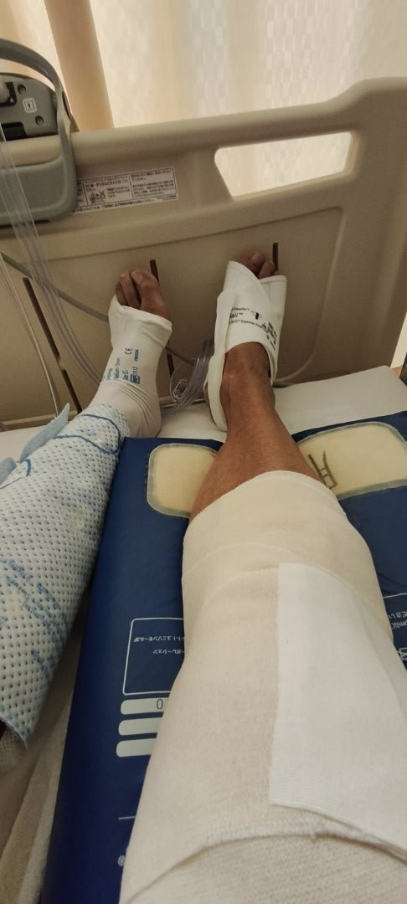
動かすことも曲げることもできないので空気圧で繋がれたポンプで足を締め付けたりして血栓防止の機械が24時間動いてる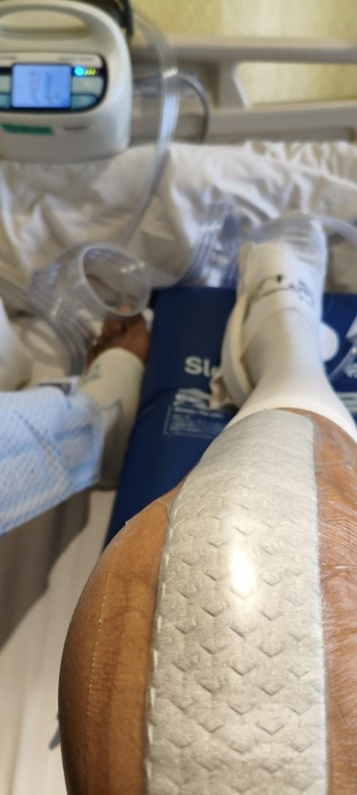
4日目位に包帯グルグルが取れた。傷口はこんな感じてある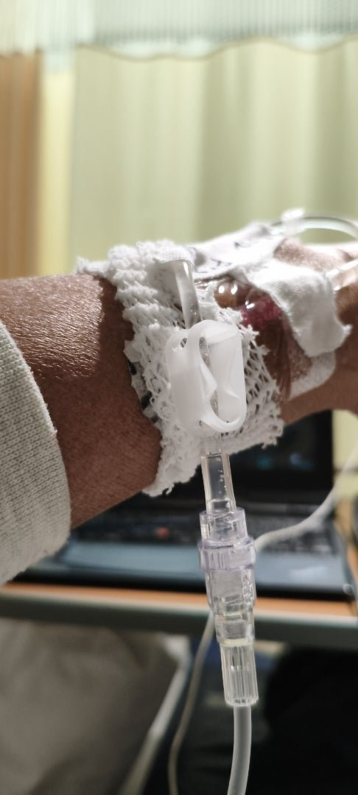
左手の点滴薬を入れるチューブと点滴のチューブ2本だ。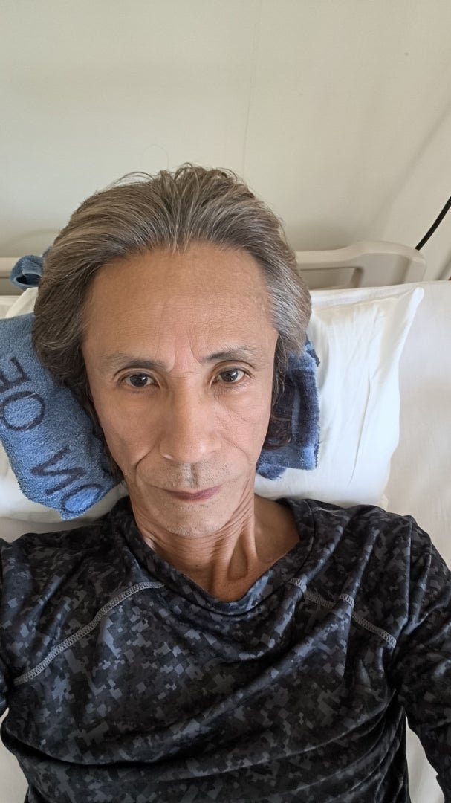
浴衣が脱げて普通の服が着られただが足はまだ棒のように動かない。少しだけ曲げてみるが激痛が走る‼️
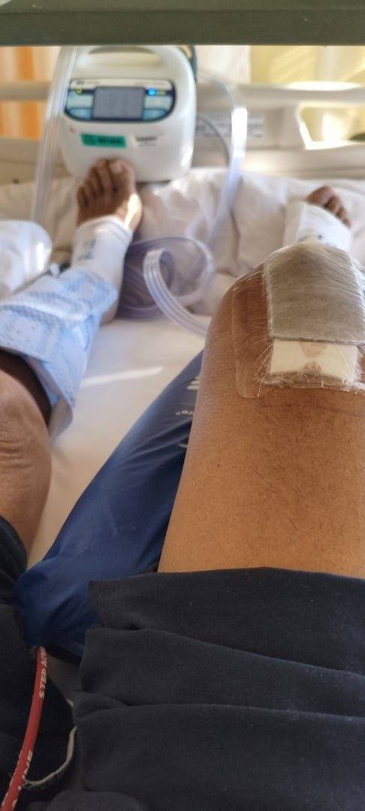
つま先は動かせるし痛みはないが膝に関してはもうお手上げである足だけど……足からず。
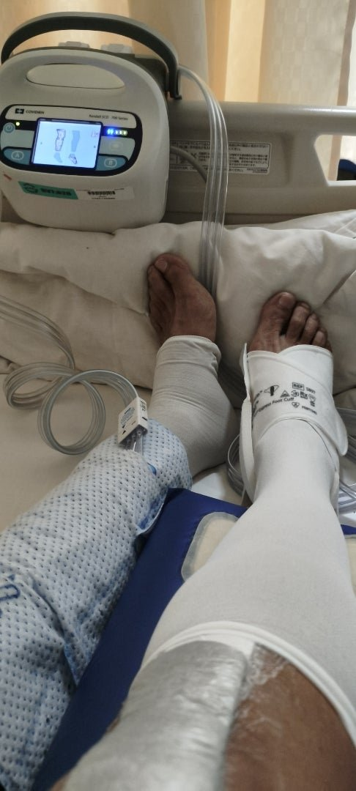
白いストッキングを履かされている、これも血栓防止だそうです。人生初のストッキング‼️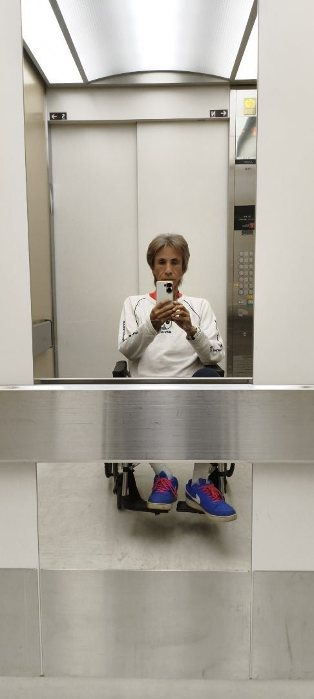
車椅子で移動することができたのは5日目位い念願のコンビニへ‼️表にも出られる‼️もちろん根津神社のお守りを持って外に出る。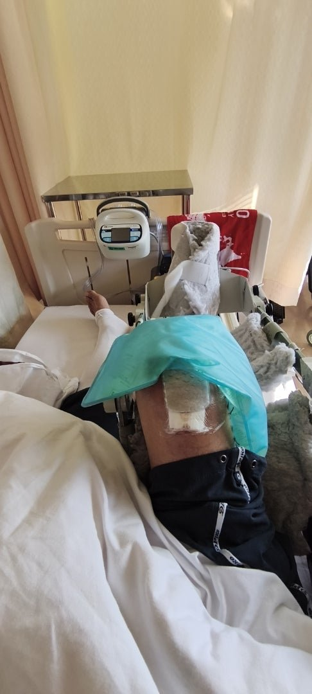
強制的に足を曲げてくれる機械に足を乗せて1時間頑張って膝の曲げ伸ばし。これを毎日やる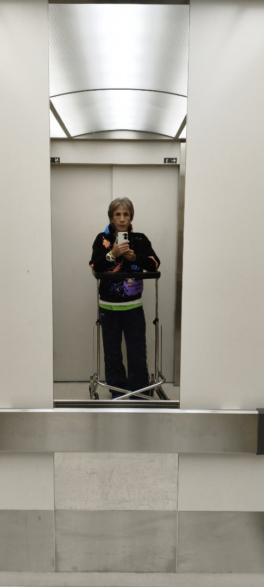
そう言えば外は寒く中は暖かい。リハビリも始まった。美人のリハビリ先生に惚れてしまったようだ。熱が37.7℃まで上がった……。恋だな……？と思った日であった。※ この記事はアメブロからの移行記事です（原文はこちら）